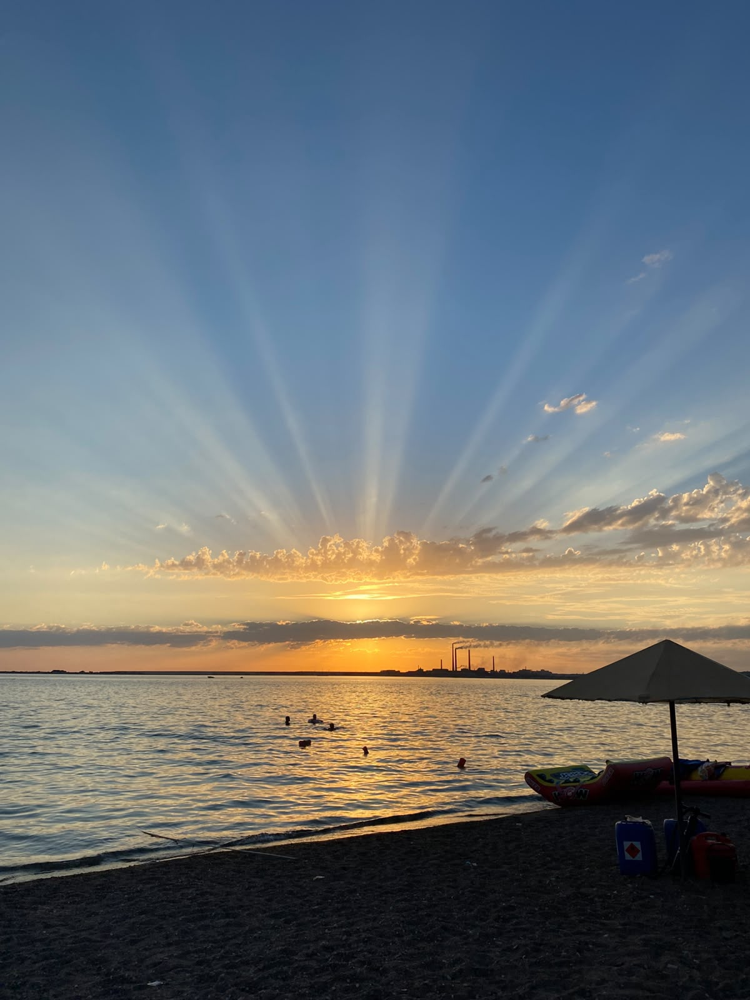
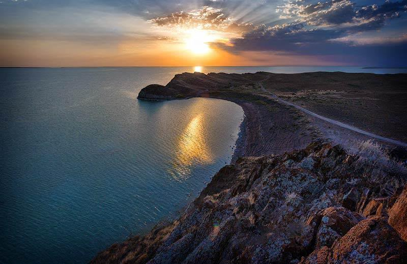
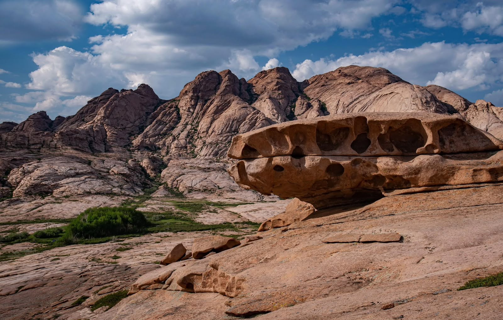
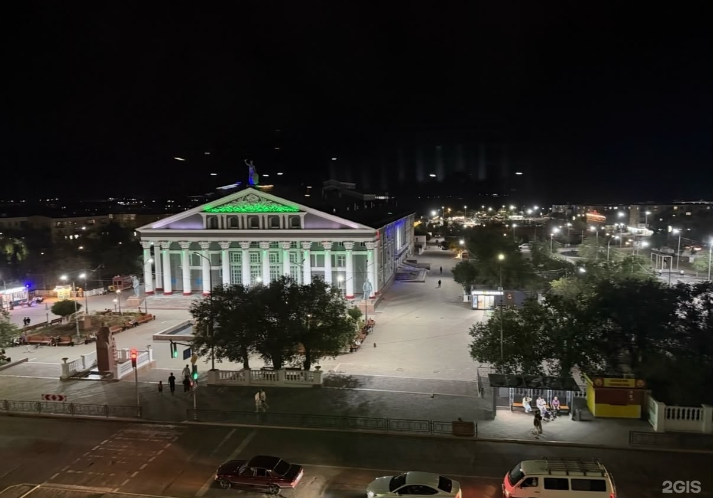
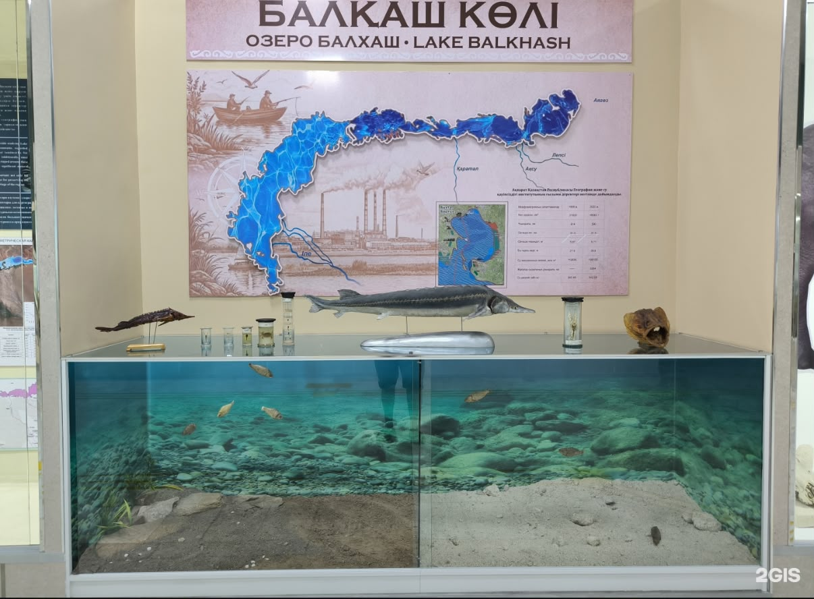

Lake Balkhash
Relax on the beautiful shores of Lake Balkhash, enjoy the warm sun, swim in the clear water, and watch stunning sunsets. It is a perfect place for a peaceful getaway with friends or family.
DISCOVER KAZAKHSTAN
Relax by the beautiful lake and enjoy the peaceful nature of Balkhash.
WELCOME TO BALKHASH
Whether you love outdoor activities or simply want to escape the city, Balkhash is a perfect place to slow down and enjoy the moment.
Enjoy the lake, warm summer days, beautiful sunsets and relaxing moments in nature.

PLACES TO VISIT

Relax on the beautiful shores of Lake Balkhash, enjoy the warm sun, swim in the clear water, and watch stunning sunsets. It is a perfect place for a peaceful getaway with friends or family.

Explore the unique rocky landscapes of Bektau-Ata, located near Lake Balkhash. Enjoy breathtaking views, unusual rock formations and a peaceful atmosphere surrounded by nature. It is a great place for hiking, photography and adventure.

Visit the Palace of Culture of Metallurgists, one of the recognizable historical buildings in Balkhash. Its architecture reflects the industrial history and cultural heritage of the city.

Discover the history and culture of Balkhash at the local history museum. Learn about the region, its nature, traditions and the development of the city.
EXPERIENCES
Spend a relaxing day near the lake and enjoy the peaceful atmosphere.
During warm weather, visitors can enjoy swimming and relaxing near the water.
Fishing is one of the activities visitors can enjoy while spending time near Lake Balkhash.
Enjoy the beautiful colors of the sunset and take memorable photos near the lake.
PLAN YOUR TRIP
| Activity | Best Time | Duration |
|---|---|---|
| Swimming | Summer | 2–3 hours |
| Fishing | Summer | 3–5 hours |
| Beach Walk | Evening | 1–2 hours |
| Photography | All year | 1–2 hours |
TRAVEL IDEA
Balkhash is a good choice for travelers who want a calm trip surrounded by water, mountains and nature.